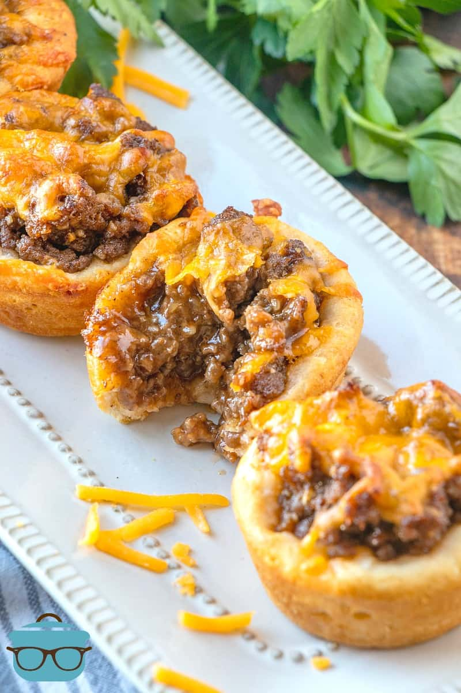

Beefy Cheddar Cups
Home

Description
Beefy Cheddar Cups only have 5 ingredients: biscuits, beef, bbq, cheese, and seasoning
Ingredients
- 1 lb ground beef
- 3/4 cup bbq
- 12 ounce can refrigerated biscuits
- 1 cup shredded cheddar cheese
- 1 tablespoon dry minced onion
Directions
- Preheat oven to 400F degrees. Spray muffin tin with nonstick cooking spray.
- In a large pan, brown and crumble 1 pound ground beef. Turn off heat and drain excess grease from ground beef.
- Put ground beef back in pan and add in 3/4 cup barbecue sauce and 1 Tablespoon dry minced onion. Stir well.
- Separate 12 ounce can refrigerated biscuits and place into greased muffin tins. Press dough up and along the sides.
- Divide meat mixture between muffins (you may have just a small amount leftover).
- Sprinkle the biscuit cups with 1 cup shredded cheddar cheese(dividing evenly between all the cups).
- Bake for 10-12 minutes until biscuits are golden brown and cheese is melted.